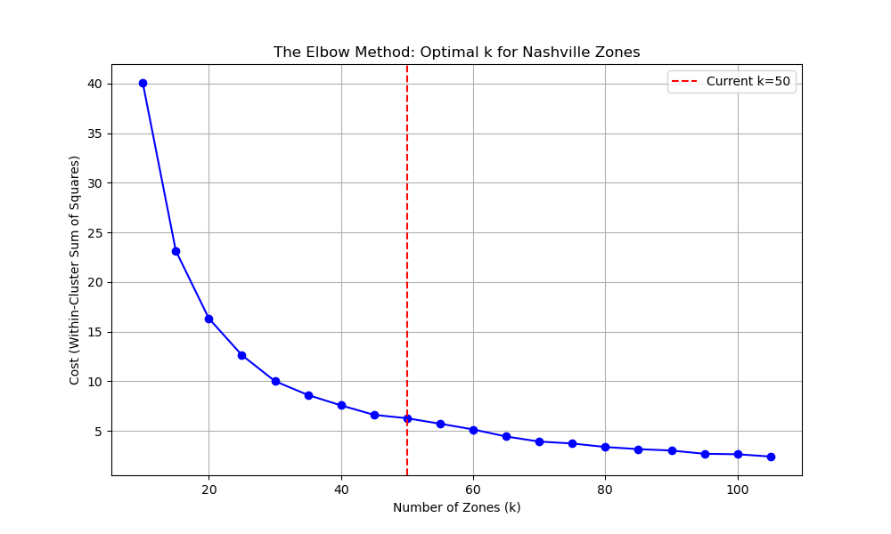

Nashville Tourism & Investment Analytics
A Kafka + Spark Structured Streaming pipeline scores Nashville's tourism mood in real time from Yelp reviews and compares it against Airbnb guest sentiment, while a separate Spark ML batch pipeline clusters the city into 35 zones and predicts which ones are under-monetized relative to their demand — the "Hidden Gems." Both pipelines feed a single Streamlit dashboard.
OrientationStart here
This page is the technical account of the system, written to be read straight through. Chapters 1–8 build up in order: the problem and why the city changed midway through, the scope boundary, the architecture, how the two pipelines actually work, how the ETL feeds them, what the dashboard shows, and what the results do not support.
New to Spark / streaming?
Read top to bottom. Concepts are introduced where they first matter, and the glossary collects every term.
Just want the pipelines?
Use the sidebar. Likely destinations: real-time sentiment, zone modeling.
Assessing the work?
Chapter 8 states plainly what these results do and do not support — start there if you're grading it.
The question is whether a neighborhood tourists love (high Yelp sentiment, lots of check-ins) is under-served by short-term rentals — a gap between demand and supply that would make it a good place to invest. One pipeline answers the "right now" half: a Kafka producer replays Yelp reviews as a live stream, Spark Structured Streaming scores each one with VADER sentiment analysis and compares a 30-day rolling window of it against a precomputed Airbnb baseline. The other pipeline answers the "where" half, offline: Spark ML clusters Nashville into 35 geographic zones with K-Means, aggregates Yelp demand and Airbnb supply per zone, and trains a regression model to predict the revenue a zone should generate given its popularity — zones earning less than predicted are flagged as "Hidden Gems." Both write CSVs that a Streamlit dashboard polls and renders.
This is coursework for CMPT 732 at Simon Fraser University, and the modeling is intentionally simple — a four-feature linear model against an estimated revenue proxy, not a validated forecasting system. Where a figure is a proxy or an estimate rather than a direct measurement, this page says so, especially in Chapter 8.
Chapter 1The problem
Where tourism demand and rental supply disagree.
The core question
Short-term rental investors tend to cluster around the obvious strip — Broadway, downtown, the areas everyone already knows. The project's premise is that this leaves money on the table: some neighborhoods generate real tourist enthusiasm (people eating out, checking in, leaving glowing reviews) without a proportional supply of Airbnb listings to capture it. Formally: is there a zone where Yelp sentiment is high but Airbnb guest sentiment (or supply) lags? That gap is the "Hidden Gem" signal the two pipelines are built to surface — one in near real time, one as a per-zone revenue prediction.
Why Nashville, not Vancouver
The project didn't start in Nashville. The ETL scripts still carry the evidence: the earliest
versions (split_yelp_by_city.py, split_yelp_by_city_parquet.py) filter
the Yelp Open Dataset down to Canadian provinces only, aimed at Vancouver. Two
problems forced a pivot, documented on the project's slides: live Yelp API access is rate-limited
and expensive, which ruled out pulling fresh Vancouver reviews; and matching Yelp business
records to Inside Airbnb listings ran into inconsistent neighbourhood boundaries and thin data on
the Canadian side. Nashville — well covered by both the historical Yelp Open Dataset and Inside
Airbnb, with a real short-term-rental market — gave better temporal and spatial alignment. The
later ETL scripts (split_yelp_us.py, split_yelp_parquet_us.py) reflect
that: they scan the full US Yelp dataset for any city with at least 100 businesses,
rather than filtering to Canada.
Chapter 2What was built
Two pipelines that don't talk to each other, sharing one dashboard.
Two independent pipelines
The system is not one end-to-end streaming application — it's two separate Spark jobs, run by two separate shell scripts, that happen to write into the same Streamlit app.
| Pipeline | Nature | Entry point | Writes |
|---|---|---|---|
| Sentiment pulse | Continuous streaming — Kafka → Spark Structured Streaming | start_pipeline.sh → sentiment_streaming.py |
/home/ubuntu/dashboard_data/*.csv, overwritten every micro-batch |
| Investment zones | One-shot batch job — Spark ML, run on demand | run_ml.sh → Linear_Regression_Nashville.py |
/home/ubuntu/nashville_investment_map_output/*.csv, once per run |
They share vocabulary (both work in Yelp/Airbnb terms, both used K-Means zones during development) but no runtime dependency — you can run either without the other, and the dashboard degrades gracefully (with a warning banner) if one hasn't produced output yet.
Data sources
| Source | What it provides | Format on disk |
|---|---|---|
| Yelp Open Dataset | Business listings, reviews, check-ins — the demand side | Raw JSON → per-city JSON → partitioned Parquet |
| Inside Airbnb | Listings (price, location) and guest reviews — the supply side | CSV / gzipped CSV, scraped per city by scrape_airbnb.py |
Both are staged in S3 under s3a://cmpt732-pluto-project/ (bucket name and paths are overridable via S3_BUCKET_BASE and related env vars).
Chapter 3Architecture
One EC2 box, one Kafka broker, five Python/PySpark programs, and a dashboard.
Components
| Component | Role |
|---|---|
yelp_producer.py | Kafka producer. Reads a Yelp review Parquet file and replays each row as a JSON message, ~20/sec, to simulate a live feed. |
sentiment_streaming.py | Spark Structured Streaming job. Consumes the Kafka topic, scores sentiment with VADER, joins against a precomputed Airbnb baseline, writes CSV every 10s. |
Linear_Regression_Nashville.py | Batch Spark ML job. Clusters Nashville into 35 zones, engineers per-zone features, trains a Linear Regression revenue model. |
Nashville_Investment_GBT.py | Same pipeline, swapping in a Gradient-Boosted Tree regressor — kept as an alternative, not run by default. |
dashboard.py | Streamlit app. Polls both pipelines' output CSVs and renders them as two tabs. |
How it fits together
flowchart TB
subgraph EC2["AWS EC2 instance"]
direction TB
subgraph INFRA["Provisioning"]
direction LR
SETUP["`**setup_ec2.sh**
Java 17 · Docker · Python deps`"]
COMPOSE["`**docker-compose.yml**
Kafka + Zookeeper, 1 broker`"]
end
subgraph STREAM["Streaming — start_pipeline.sh"]
direction TB
PROD["`**yelp_producer.py**
replays reviews → Kafka`"]
KAFKA[("Kafka
topic: yelp-reviews")]
SPARK1["`**sentiment_streaming.py**
VADER + windowed join`"]
PROD --> KAFKA --> SPARK1
end
subgraph MLJOB["Batch ML — run_ml.sh"]
SPARK2["`**Linear_Regression_Nashville.py**
K-Means (35) + Linear Regression`"]
end
DASH["`**dashboard.py**
Streamlit :8501`"]
SPARK1 -- "dashboard_data/*.csv" --> DASH
SPARK2 -- "investment_map_output/*.csv" --> DASH
end
S3[("S3
cmpt732-pluto-project
Yelp Parquet + Airbnb CSV")]
ETL["`**split_yelp_*.py**
raw JSON → Parquet ETL`"]
ETL --> S3
S3 -.-> SPARK1
S3 -.-> SPARK2
USER(["Browser"]) -- "http://ec2-host:8501" --> DASH
style KAFKA fill:__NEUTRAL_FILL__,stroke:__NEUTRAL_STROKE__,color:__NEUTRAL_TEXT__
style S3 fill:__NEUTRAL_FILL__,stroke:__NEUTRAL_STROKE__,color:__NEUTRAL_TEXT__
style DASH fill:#5b7f9e,color:#fff,stroke:#3f6180
style USER fill:__NEUTRAL_FILL__,stroke:__NEUTRAL_STROKE__,color:__NEUTRAL_TEXT__
Everything runs on a single VM — docker-compose.yml brings up
one Kafka broker with replication factor 1 (see Chapter 8).
Chapter 4Real-time sentiment pipeline
sentiment_streaming.py — one Spark job with a static half and a streaming half.
The job opens two data sources with very different lifecycles and reconciles them every micro-batch. The Airbnb side is read once, scored, and cached. The Yelp side never stops.
flowchart LR
START(["Start"]) --> INIT["Init SparkSession
+ clean_text / VADER UDFs"]
INIT --> A1
INIT --> B1
subgraph STATIC["Static phase — precompute once"]
direction TB
A1["Read Airbnb listings.csv
+ reviews.csv.gz (10% sample)"] --> A2["clean_text → VADER
compound score"] --> A3[("cached: avg sentiment
by year_month")]
end
subgraph LIVE["Streaming phase — every micro-batch"]
direction TB
B1["Kafka: yelp-reviews"] --> B2["parse JSON → VADER
compound score"] --> B3["30-day window,
slide 1 day, watermark 2h"]
end
A3 --> JOIN
B3 --> JOIN["left-outer join
on year_month"]
JOIN --> LOGIC{"tourism_status
thresholds"}
LOGIC --> SINK["foreachBatch → CSV
overwrite, every 10s"]
SINK --> END(["awaitTermination"])
style JOIN fill:__NEUTRAL_FILL__,stroke:__NEUTRAL_STROKE__,color:__NEUTRAL_TEXT__
style LOGIC fill:#a8813f,color:#fff,stroke:#83642f
style SINK fill:__NEUTRAL_FILL__,stroke:__NEUTRAL_STROKE__,color:__NEUTRAL_TEXT__
year_month, not geography — see Chapter 8.Static phase — the Airbnb baseline
Before the stream starts, the job reads Nashville's Airbnb listings.csv and
reviews.csv.gz from S3, joins reviews to their listing, and samples
10% of reviews (fixed seed 42) purely to keep this precompute step fast. Each
comment is cleaned with a regex UDF (strips HTML tags, URLs, and collapses whitespace) and scored
with VADER's compound sentiment score, then averaged per
year_month and cached in memory for the life of the job. If the Airbnb load fails —
missing columns, unreachable S3 path — the job doesn't crash; it falls back to an empty typed
DataFrame so the stream still runs, just without an Airbnb comparison.
Streaming phase — Yelp via Kafka
yelp_producer.py reads a Yelp review Parquet file, sorts it by date, and replays each
row to the yelp-reviews Kafka topic as JSON with a 50ms delay (roughly 20
messages/sec) — this is a simulated real-time feed over historical data, not a live
firehose. On the consuming side, sentiment_streaming.py subscribes from
latest, parses each message against a fixed schema, cleans and scores it the same
way as the Airbnb text, and aggregates with a 30-day sliding window advancing every
day, under a 2-hour watermark on event time.
Stream-static join & tourism status
Each windowed Yelp aggregate is left-outer joined to the cached Airbnb stats on
year_month, producing a sentiment_gap
(airbnb_avg_sentiment − yelp_avg_sentiment) and a categorical read on the local
market:
| Condition | tourism_status |
|---|---|
| Airbnb ≥ 0.6 and Yelp ≥ 0.6 | Tourism Booming (Both High) |
| Airbnb < 0.5 and Yelp ≥ 0.6 | Great Food, Poor Stay (Yelp > Airbnb) |
| Airbnb ≥ 0.6 and Yelp < 0.5 | Great Stay, Bad Food (Airbnb > Yelp) |
| Otherwise | Mixed / Neutral |
The result is written in complete output mode via foreachBatch, coalesced
to a single CSV and overwritten every 10-second trigger — the dashboard always reads the latest
full snapshot rather than an append log.
Chapter 5Investment / zone modeling
Linear_Regression_Nashville.py — a one-shot batch job, run separately from the stream.
Cleaning & the revenue proxy
Airbnb's price column arrives as a currency string ("$120.00"); it's
stripped of $/, and cast to a float. There is no bookings or occupancy
field in the dataset, so the job approximates monthly revenue as:
est_monthly_revenue = price_clean * reviews_per_month
This treats "reviews per month" as a stand-in for "bookings per month," which is the standard
Inside Airbnb approximation — useful for relative comparison between zones, not a real revenue
figure. Yelp's checkin records store comma-separated timestamp strings per business;
checkin_count is just the length of that list after splitting on commas.
Spatial clustering — why 35 zones
Nashville has no clean, pre-existing neighborhood key that both Yelp and Airbnb agree on, so the
project defines its own zones geometrically: every Yelp business coordinate and every Airbnb
listing coordinate is pooled and clustered with K-Means, k=35. The fitted model
is then reused to assign a zone_id to both datasets independently, and its 35 cluster
centers become the map points the dashboard plots.

Optimal_zones.py sweeps k from 10 to 105 and plots WCSS to find where
adding zones stops meaningfully reducing spread — the elbow method behind the k=35 choice.
The elbow plot committed to the repo annotates a dashed line at k=50, not the
k=35 that Linear_Regression_Nashville.py actually uses. The two weren't
regenerated together — the plot appears to be from an earlier pass of the analysis before the
team settled on 35. The curve itself still supports 35 as a reasonable elbow; the annotation
just wasn't updated to match.
Feature engineering by zone
Once every business and listing carries a zone_id, both sides are aggregated independently and joined:
| Side | Feature | Meaning |
|---|---|---|
| Demand (Yelp) | total_businesses | Count of businesses in the zone |
avg_biz_stars | Mean Yelp star rating | |
total_biz_reviews | Sum of Yelp review counts | |
total_checkins | Sum of parsed check-in counts | |
| Supply (Airbnb) | airbnb_listing_count | Distinct listings in the zone |
avg_nightly_price | Mean cleaned nightly price | |
avg_actual_revenue | Mean est_monthly_revenue — the regression label |
Linear Regression vs. GBT
The primary model is a Spark ML LinearRegression (regParam=0.1) trained
on the four demand features above, predicting avg_actual_revenue. An alternate script,
Nashville_Investment_GBT.py, swaps in a GBTRegressor
(maxIter=50) over the identical feature set and prints feature importances instead of
coefficients — kept for comparison, not wired into run_ml.sh by default. Note the two
scripts also default to different output paths (local disk for the Linear Regression version, an
S3 path for the GBT version) — switching models means reconciling that path, not just the
algorithm.
Classifying Hidden Gems
The model's prediction is compared against the zone's actual estimated revenue:
investment_potential_score = predicted_revenue - avg_actual_revenue
market_status =
"Hidden Gem (Invest)" if investment_potential_score > 100
"Saturated (Avoid)" if investment_potential_score < -100
"Balanced Market" otherwiseA zone whose demand signals (businesses, ratings, reviews, check-ins) predict more revenue than it's currently capturing is a Hidden Gem — undersupplied relative to its popularity. The ±100 threshold is a fixed dollar cutoff, not derived from the data's variance — see Chapter 8.
Chapter 6ETL & data engineering
Two stages, each with a Canada-only prototype and a US-wide successor.
The Yelp Open Dataset ships as a handful of enormous line-delimited JSON files covering every city Yelp operates in. Getting from that to "Nashville business.parquet" is a two-stage process, and the repo keeps both generations of scripts — from before and after the pivot described in Chapter 1.
| Stage | Script | What it does |
|---|---|---|
| 1. Raw JSON → per-city JSON pure Python, single pass, no Spark |
split_yelp_by_city.py |
Prototype. Filters to Canadian provinces only, splits business/review/user/etc. JSON by city. |
split_yelp_us.py |
Successor. Scans all 50 US states, keeps any city with ≥100 businesses, maps users to
cities via their reviews before splitting user.json. |
|
| 2. Per-city JSON → partitioned Parquet PySpark |
split_yelp_by_city_parquet.py |
Prototype. Converts each city's JSON files to Parquet — business partitioned by
state, review by year, photo by label. |
split_yelp_parquet_us.py |
Successor. Same partitioning scheme, plus an explicit review schema to skip Spark's (costly) schema inference over the larger US-wide dataset. |
scrape_airbnb.py handles the other side: it scrapes
insideairbnb.com/get-the-data for every
US and Canadian city with published data and downloads each city's CSV/CSV.gz files locally —
the raw material for scope-data's Airbnb side.
Chapter 7The dashboard
dashboard.py — a two-tab Streamlit app that polls both pipelines' CSV output.
| Tab | Source | Shows |
|---|---|---|
| 📡 Live Sentiment Pulse | dashboard_data/*.csv, polled every 5s in a live loop |
Current month, Yelp vs. Airbnb sentiment metrics, a colored status banner from
tourism_status, the historical table, and a line chart of both sentiment series
over time. |
| 💰 Investment Opportunities | nashville_investment_map_output/*.csv, read once per page load |
The full 35-zone table plus an st.map() of zone centers. |
The map is a plain point scatter — st.map() doesn't color-code by
market_status, so "Hidden Gem" vs. "Saturated" zones are only distinguishable in the
adjacent table, not visually on the map itself.
Chapter 8Limitations
What this does and doesn't demonstrate.
- Revenue is a proxy, not a measurement.
price × reviews_per_monthis Inside Airbnb's standard approximation for occupancy-driven revenue, not actual booking or payout data. Every downstream number — the regression label, the investment score, the Hidden Gem/Saturated classification — inherits that uncertainty. - The join key is time, not geography. The sentiment pipeline compares Yelp and
Airbnb sentiment by
year_monthcity-wide; it never joins to azone_id, so the "live pulse" tab and the "investment zones" tab answer related but structurally separate questions and can't be cross-filtered. - The stream is simulated.
yelp_producer.pyreplays historical, already-collected reviews at a fixed rate — it demonstrates the streaming architecture correctly, but it is not consuming a live Yelp firehose. - Single-broker Kafka, no replication.
docker-compose.ymlruns one Kafka broker withOFFSETS_TOPIC_REPLICATION_FACTOR=1— fine for a course project, not a durability story. - Fixed, unvalidated thresholds. The ±100 investment-score cutoff and the 0.5/0.6 sentiment bands are hand-picked constants, not derived from the data's own distribution or validated against known-good zones.
- Four-feature linear model.
total_businesses,avg_biz_stars,total_biz_reviews,total_checkinspredict revenue with light regularization (regParam=0.1) and no train/test split reported in the script — treat the coefficients as descriptive, not as a validated forecast. - Elbow plot / final k mismatch. See the callout in §5.2 — the committed plot annotates k=50, the pipeline uses k=35.
- Hardcoded, single-host paths. Output paths like
/home/ubuntu/dashboard_dataassume a specific EC2 user and instance; running this anywhere else means editing paths in three scripts.
ReferenceGlossary
- Kafka
- A distributed log/message broker. Here, a single-node broker holding one topic
(
yelp-reviews) that decouples the producer replaying data from the Spark job consuming it. - Spark Structured Streaming
- Spark's API for treating a continuous data source as an unbounded table, processed in repeated micro-batches (here, every 10 seconds).
- Watermark
- A bound on how late an event can arrive and still be included in its time window. Set to 2 hours here — events older than that relative to the latest seen timestamp are dropped from windowed aggregation.
- Sliding window
- A time window that overlaps with its neighbors. A 30-day window sliding every 1 day means a new 30-day aggregate is emitted daily, each overlapping the previous by 29 days.
- VADER
- Valence Aware Dictionary and sEntiment Reasoner — a lexicon-and-rules sentiment model tuned
for short, informal text. Returns a compound score from -1 (most negative) to +1 (most positive);
used here via
polarity_scores(...)["compound"]. - K-Means
- An unsupervised clustering algorithm that partitions points into k groups by minimizing distance to each group's centroid. Applied here to (latitude, longitude) pairs to define geographic "zones" with no other data input.
- Elbow method
- A heuristic for picking k in K-Means: plot the within-cluster sum of squares (cost) against k and look for the point where additional clusters stop meaningfully reducing it.
- GBT (Gradient-Boosted Trees)
- An ensemble regression model that builds decision trees sequentially, each correcting the previous ensemble's errors. Used here as an alternative to Linear Regression for revenue prediction.
- coalesce(1)
- A Spark call that merges all partitions of a DataFrame into one before writing — used throughout this project to force a single output CSV file instead of Spark's default multi-part output.
- Checkpoint location
- A directory where Structured Streaming persists its progress (offsets, state) so a restarted query resumes rather than reprocessing from scratch.